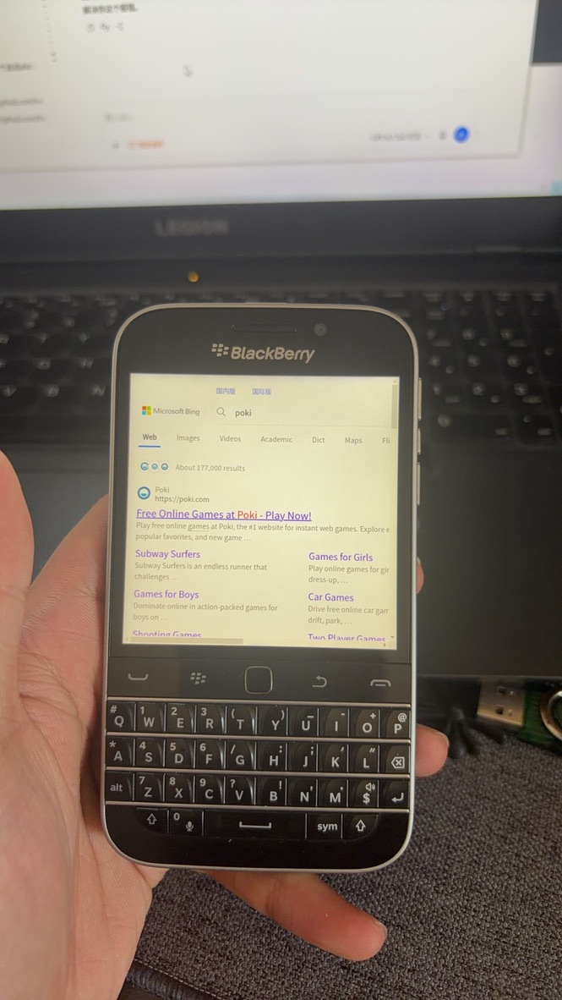
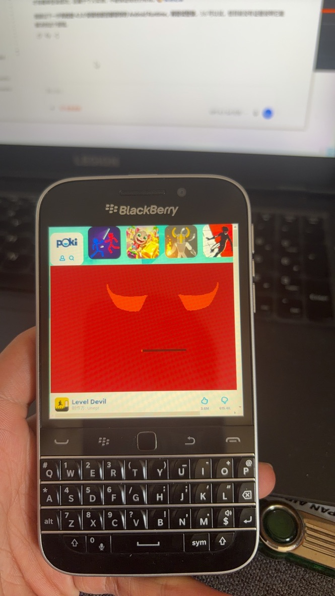
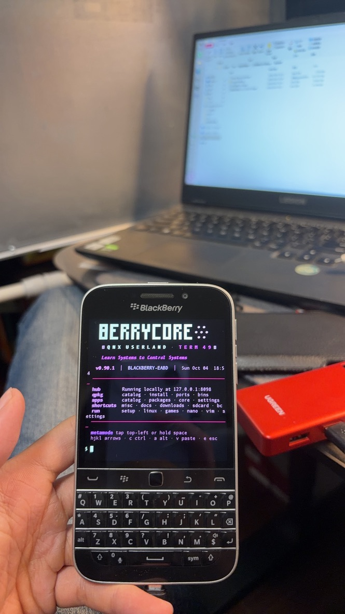

01 — THE FOUNDATION先把底座恢复干净
本次使用者从 BerryLife 的 Pre-rooted Autoloaders v3 指南获取工具与刷机资源。该页提供 v3 工具和原厂 ROM 的入口，并注明原作者 Oleksandr；本仓库通过来源页面链接资源，不托管固件。
Classic 的键盘还好好的，系统却已经失去配合：root 后的 SSH 不稳定，Android 应用又停在加载页面。使用者决定不备份，授权清空重刷。我们回到同一份原厂固件，再建立可解释的状态。
这次使用适配 Classic 的 Z30 STA100 系列 10.3.3.3216 stock autoloader。Windows 上先刷 stock，再刷由同一来源构建的 AutoRoot v3 用户文件系统，最后刷配套 radio。三次工具都完成，随后 root 更新日志也记录完成。root 镜像不是完整原厂包，同源底座是这条路径的前提。
先让每一步有证据，再把下一步交给它。
构建前读取 patch 与启动脚本，比复述一份教程更有用。本次脚本实际检查的是 use.sshd，某些说明中写成 use.ssh。我们启用了 root、SSH 标志，并把自有公钥放进 payload。私钥留在电脑；公开记录里不保存凭据。
touch /var/rootdata/use.root touch /var/rootdata/use.sshd
开机到桌面后，连接 Wi-Fi、打开开发模式，等待后台初始化。固定等待时间可以作参考，但完成与否仍要看服务和日志。完整构建参数与命令见 Windows 操作记录。
02 — A SHELL THAT ANSWERS端口打开，只是故事的开始
开发模式和 SSH 是不同的接口。早期通过 BB10 MultiTool 建立的连接，还会随连接进程退出而消失。手机端用 Term49 进入 root 后，我们单独启动 SSH，并从 Windows 检查端口和真实认证。
__root /usr/sbin/sshd -e -f /var/etc/ssh/sshd_config -h /var/etc/ssh/ssh_host_rsa_key
最早的错误里有两处手输细节：二进制路径末尾多了斜杠，会得到“Not a directory”；配置项写成 AuthorizedKeyFile 会被拒绝，正确拼写是 AuthorizedKeysFile。主机密钥缺失，则需要检查设备上的密钥路径与权限。
密钥认证走通后，密码认证又成为单独的问题。只改一个配置开关仍然不够：这台原生服务没有验证成功所需的 root 密码。最后从 BerryCore 包中提取原始 OpenSSH 7.1p2，结合 QNX 的账户 overlay 和路径信任机制，完成了独立服务的密码登录。这个阶段没有先安装整个 BerryCore。
03 — BEHIND THE PROGRESS BAR进度条后面，是被拒绝的配置
Settings 已安装，却一直卡在后面的进度条。查看进程和系统日志时，Android 的 init 和 resmgr 出现了，zygote 与 system_server 却没有正常启动。真正有方向的日志，是这句：
init: skipping insecure file '.../native/default.cfg' init: skipping insecure file '.../native/init.cfg' init: skipping insecure file '/system/build.cfg'
本次配置文件被设成了 777，Android init 因为权限过宽而跳过。我们发现实际 Android 应用目录后，仅把 default.cfg、init.cfg、system/build.cfg 与 autolaunch.cfg 改为 644，保留所有者。没有递归更改整个 /apps。
停止已定位的 Android 相关进程、重新打开 Settings 后，zygote、installd 和 SystemServer 开始出现。首次扫描和 dexopt 仍需等待；使用者关闭卡片再重新打开，最终确认进入了设置页面。
这台设备的 Runtime 仍是 Android 4.3 / API 18，主要 ABI 为 armeabi-v7a。root 不会把它升级成现代 Android。网易云旧版可安装，但密码登录依然报服务器错误；这项云端登录问题仍未解决，我们没有把它写成恢复成功。
04 — THE INSTALLER'S IDENTITYroot，也要用对安装身份
Windows 负责上传文件，手机里的 PPS 安装器接手。最实用的发现是：以 root 直接写 PPS 仍可能遇到权限问题；通过 /bin/on -u upd /bin/sh 使用安装器身份，就能提交任务并读取状态。
/bin/on -u upd /bin/sh # 对独立任务写入 action、package_location、extras # 等待 progress::100 和 result::success
这次八个 BAR 的任务全部返回 success。文件名也不总是软件名：名为 Angry-Birds_1.4.1 的包，实际识别为 Angry Birds Star Wars。
| 应用 | 本次状态 |
|---|---|
| Playepub / Plants Vs Zombies / Cut the Rope 2 | 安装器 success |
| Asphalt 6 / Angry Birds Star Wars / Angry Birds | 安装器 success |
| 2048 / Minion Rush | 安装器 success |
| Settings | 使用者确认进入页面 |
没有逐一运行游戏，因此触控、画面比例、旧网络服务的兼容性还不能下结论。安装成功后，删除这次上传的十三份暂存 BAR，释放约 780 MiB。应用本体不依赖这些上传副本；root 自带的维护 payload 和未知系统文件保留。
05 — PASS IT FORWARD让下一位 agent 接得住
仓库附带可复用 skill，把这次最容易误判的边界留下：固件同源、use.sshd、QNX overlay、upd 角色、Android 配置权限，还有“监听、认证、安装和运行是不同状态”。
请读取 https://github.com/EazyLee30/reberry ，先阅读 README.md 和 skills/blackberry-bb10-recovery/SKILL.md。 结合我的电脑系统、设备型号、固件与日志，协助恢复我拥有的 BB10 设备。 先发现当前状态，不要默认重刷；刷写前确认清空授权及 stock/root 同源。 使用我自己的密钥。不要发布密码、私钥、设备标识、个人地址或原始日志。 分别确认 SSH 监听与认证、Android 系统服务、安装器 success 和应用实际运行。 若在 Mac 上执行，只记录真实执行过的操作，阅读 docs/mac-handoff.md 并补充 Mac 章节。
新增 Mac 实测手记：从 SSH 连接，到 BerryCore 安装、Term49 自动加载与 SSH 短命令。重启后文件信任丢失，已加入恢复步骤，但重启回归仍待验证。Python 扩展、pip、setup 和 Bash 尚未解决；Mac 镜像构建与刷写没有执行。
06 — THE MAC CHAPTER让终端接住下一次开机
Mac 接手时，Classic 已由使用者重新刷机、完成 root。我们从 Apple Silicon Mac 通过 Wi-Fi 登录 SSH，为这台旧设备单独启用 RSA 主机密钥兼容选项，修正私钥本地权限，再验证认证与远程命令。Mac 上没有构建镜像或刷写手机。
官方 BerryCore 0.90.1 下载后先比对 SHA-256，再用传统 SCP 上传。解压完成，却不代表程序能运行：QNX 拒绝不受信任的脚本和二进制。逐文件设置 pathtrust 后，Git、curl、nano、Vim 等工具运行通过。GCC 的内置包只是 Git LFS 占位文件，已跳过；Bash 仍未解决。
# 为这台设备的 Term49 配置的短命令 sshon sshstatus
Term49 的 HOME 属于应用自身，我们在实际发现的 data 目录写入自动加载配置。SSH 状态检查改在 root helper 中执行，避免普通用户扫描其他进程时刷屏。随后重启让文件信任消失，又在现有 root 启动链加入恢复步骤并保留备份；这个开机修复尚待再次重启验证。
Classic，真的还在用
三张来自这台 Classic 的实拍：浏览网页、打开游戏页面，以及 Term49 里的 BerryCore。记录当时的画面，不把它当作性能测试。






07 — LONG LIVE THE CLASSIC属于社区的第二次生命
感谢 BerryCore 与 sw7ft、BerryLife 的持续工作。感谢 bb10root 的 root 工具与 MultiTool，感谢 BerryFarm / Term49、Term49CX、Berry Much OS 与 BB10 社区作者。也感谢 OpenAI 的 ChatGPT 和 Codex 在命令分析、执行协作与写作整理中的帮助。
这里没有上传固件、商业应用、私钥、密码或原始账户数据。我们保留的是经脱敏重新写下的步骤和证据。Classic 的光辉来自硬件的设计，也来自仍然愿意为它写软件、读日志和整理资料的人。
Long live the Classic.